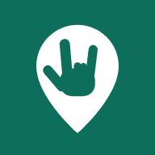

Territorios Señas Centro
Abrir el mapa
Para tener el ícono en tu teléfonoEn iPhone: toca el botón Compartir y elige «Agregar a pantalla de inicio». En Android: menú ⋮ y «Agregar a pantalla de inicio» o «Instalar app». Luego abre siempre desde ese ícono.